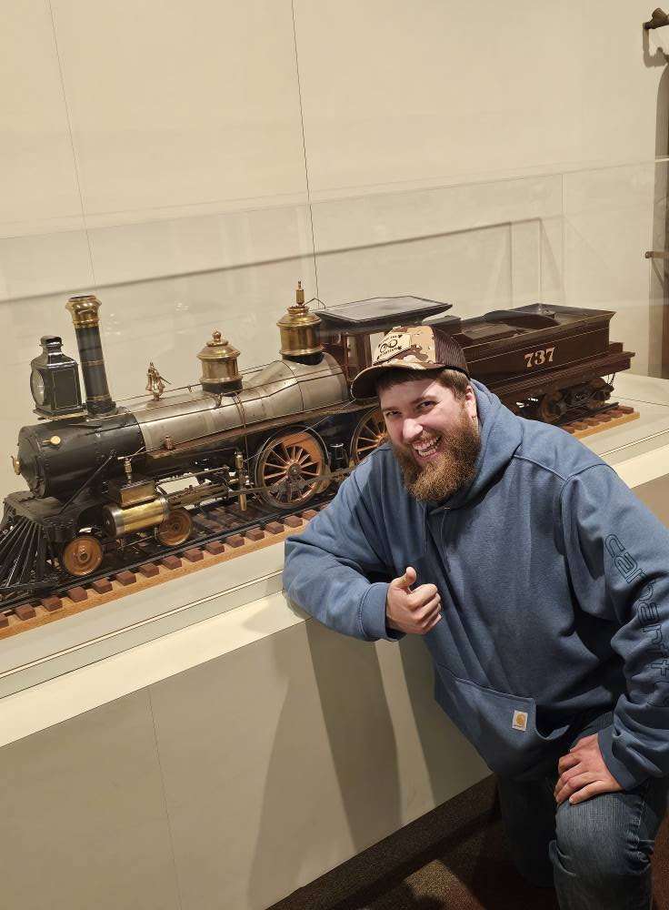

Jason Abrams

Summary
Hello! I am a jack of all trades kind of guy. I know how to do a lot and I don't really master any.I get close!
But not master it because being a one trick pony is fun in the beggining but gets stale right fast
Besides knowing how to do something is half of the battle and because of my experience in so much
I can manufacture a great pathway to lead to where I need to go.
Education
- Northern Cambria Middle/High School
- University of Pittsburgh at Johnstown (UPJ)
Work Experience
- Occasional Volunteer Staff at Sci-Fy Valley Con
- Concession stand worker;Summer job 2017-2020
- RSA at Ebensburgh State Center;Full time 2021-Current Year
Skills
- Direct Care
- Programming with C#, Godot, HTML, Mobile(Xamarin)
- Learn and Go
- Mechanic Skills
- Create fantasy stories
- Home Server Maintenance
- Fishing
Awards
- Computer Technology from High School
- Honors throughout HS and University
Contact me
Hobbies
Socials